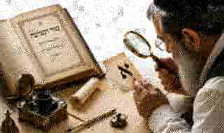

כתב מור וקציעה – היעב״ץ ומקור הכתב

היעב״ץ בספרו מור וקציעה
הנה נא נדבה רוחי אותי לדעת לרדוף ולחקור החלופים והשינויים שבין הכתיבה האשכנזית, המבוארות בבית יוסף מספר ברוך שאמר ובין הספרדית.
ונפלאתי על שלא זכר אותה הרב המשביר, בהיותה מנהג בני ארצו ז״ל. ועדיין לא חקרתי אחריה לדרוש משפטה מעל ספר אשר לא ימלט חובר לה, ולא ראיתיו עד הנה, אף על פי כן ארשום לי על פה על כל אות ואות.
בתוך דבריו של בעל ברוך שאמר, השינוי שישנו בזכרוני מאותה כתיבה המאושרת ודאי, ובלי קבלה רק ממשפט החוש בלבד, וה׳ יתברך יעזור לי שלא אכשל, ואם יגזור ה׳ עליי ויגמור בעדי, אחפש אחר הספרים המדברים בצורת האותיות האשוריות הספרדיות ובטעמיהן.
שוב נזדמנו לידי ספר מגן דוד לרדב״ז וספר מצת שמורים לרבי נתן שפירא ושמתי מה שמצאתי בם בעניין צורת האותיות.
התפתחות הכתב מור וקציעה
בעשרות שנים האחרונות, אינני יודע מי, סופר כנראה באזור ירושלים עם חיבור לכתב האשכנזי לסגנון ולפונט שלו, שילב בין חלק מהערות היעב״ץ ודברי האר״י, כמו יו״ד האל״ף התחתונה וצורת הלמ״ד עם עיגול בסוף רגלה שאינו מוזכר ביעב״ץ במפורש, וגם יש שעשו כך לפני כ־150 שנה אולי ליופי הכתיבה.
אמנם את כל צורת הכתיבה, השלמת האותיות שאינן כתובות ואת שילוב השיטה האשכנזית והספרדית, יש לזקוף את המצאת הכתב לזכותו, אך איננו יודע מה שמו. ומחוסר שם לידיעת ייחוס היוצר נתלו באילן גדול על הר במור וקציעה; אך לפי האמור, אין קשר בין הכתב לבין היעב״ץ במור וקציעה, למעט מספר פרטים בודדים.
וייתכן מאוד שאם היו מראים ליעב״ץ צילום של הכתב הנ״ל, הוא היה מחמיא על יופי הכתיבה, אך בהחלט לא היה מזהה שיש קשר בין המצולם לבין מה שכתב בספרו.